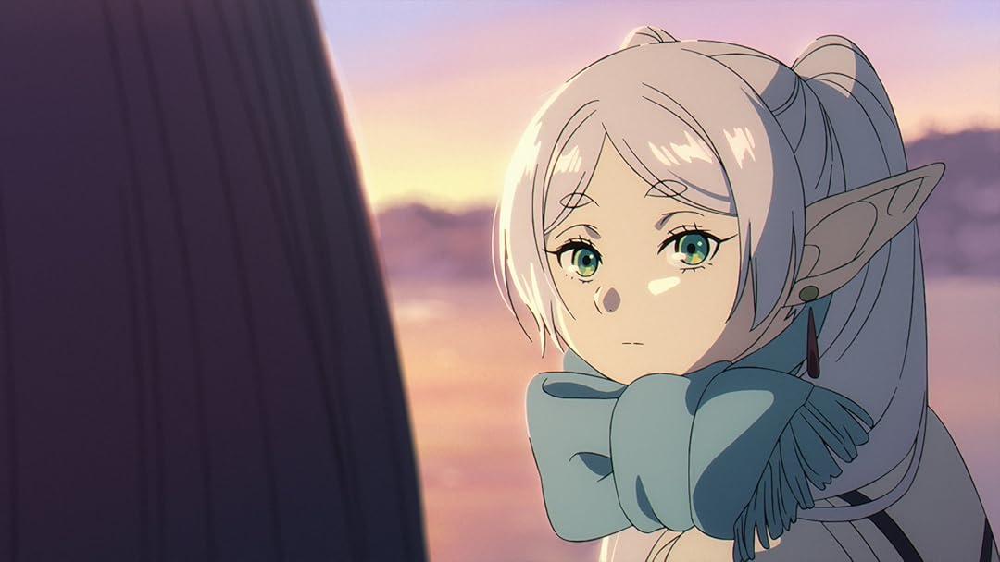
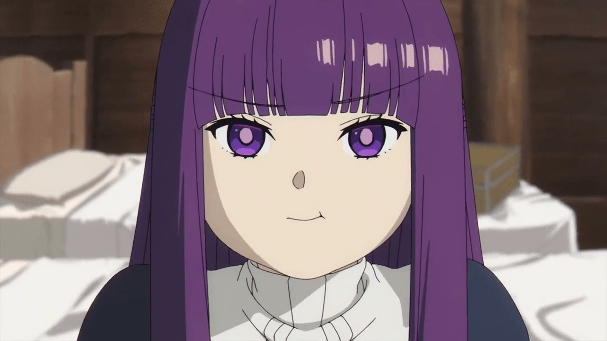
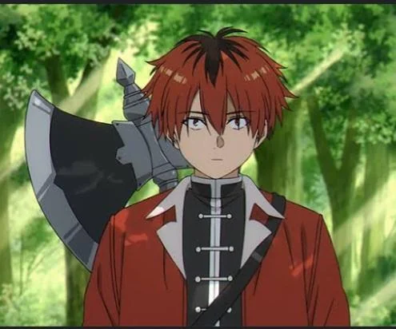
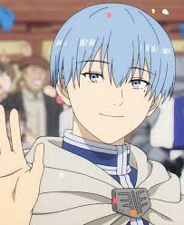
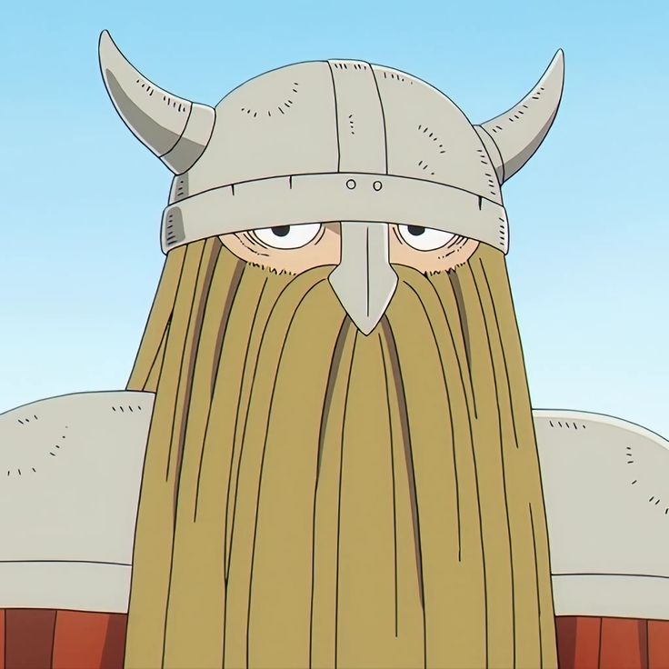
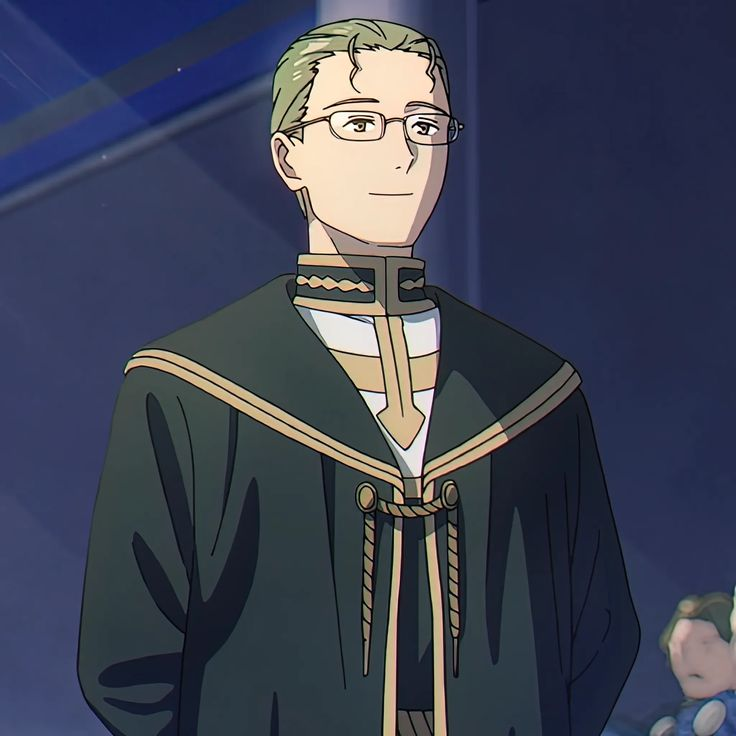
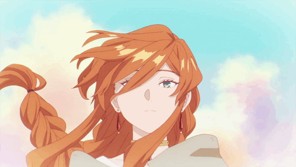
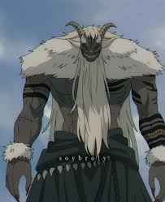
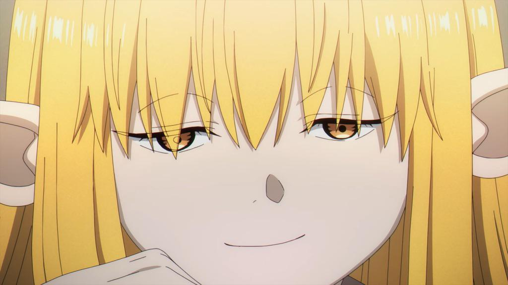

Sousou no frieren.
Mas alla del viaje.
Sinopsis
Sousou no Frieren es una historia de fantasía que comienza donde la mayoría de los relatos épicos terminan. Después de derrotar al Rey Demonio, el grupo de héroes salva al mundo y cada uno toma caminos distintos. Sin embargo, para Frieren, una maga elfa de vida extremadamente larga, el paso del tiempo tiene un significado muy diferente.
Décadas después de la victoria, Frieren se da cuenta de que apenas comprendió a sus antiguos compañeros humanos, quienes ya han envejecido o fallecido. Movida por el arrepentimiento y el deseo de entender mejor las emociones humanas, Frieren emprende un nuevo viaje, esta vez no para salvar el mundo, sino para conocerse a sí misma, valorar los recuerdos y aprender qué significa realmente el tiempo y las relaciones humanas.
Descripcion
Sousou no Frieren es una obra que se aleja de la fantasía tradicional para ofrecer una historia profunda, tranquila y reflexiva. A través del viaje de Frieren, la serie explora temas como la memoria, el paso del tiempo, la pérdida y el valor de los pequeños momentos.
A diferencia de otros relatos llenos de acción constante, esta historia se centra en los sentimientos, las experiencias cotidianas y el crecimiento emocional de los personajes. Frieren, acompañada por nuevos aliados, revive recuerdos del pasado mientras aprende a conectar con los demás y a apreciar aquello que antes le parecía insignificante.
Esta obra invita al espectador a reflexionar sobre cómo vivimos nuestras relaciones y cómo el tiempo puede cambiar la forma en que vemos el mundo y a las personas que nos rodean.
Personajes principales.
Frieren
Es una maga elfa con una vida extremadamente larga. Tras la derrota del Rey Demonio, comienza un nuevo viaje para comprender mejor a los humanos, las emociones y el valor del tiempo. Es tranquila, reflexiva y muy poderosa en magia.
Fern
Aprendiz de Frieren. Es una maga humana seria y responsable, con un gran talento mágico. Aporta madurez al grupo y representa el contraste entre la corta vida humana y la longevidad de Frieren.
Stark
Guerrero humano y discípulo del héroe Eisen. Aunque es fuerte físicamente, suele ser inseguro y temeroso. Su carácter amable y su crecimiento personal lo convierten en un miembro importante del grupo.
Personajes secundarios
Himmel
El héroe del grupo original que derrotó al Rey Demonio. Era carismático, bondadoso y muy querido por la gente. Su muerte marca profundamente a Frieren y es el detonante de su viaje emocional.
Eisen
Guerrero enano del grupo original. Es fuerte, serio y disciplinado. Fue el maestro de Stark y sigue vivo gracias a la larga esperanza de vida de los enanos.
Heiter
Sacerdote humano del grupo original. Era alegre y algo irresponsable, pero muy sabio. Antes de morir, confía a Fern al cuidado de Frieren.
Falmme
Legendaria maga humana y antigua maestra de Frieren. Le enseñó no solo magia, sino también la importancia de convivir con los humanos y comprender sus sentimientos.
Rey demonio
Antagonista principal del pasado. Fue derrotado por el grupo de héroes antes del inicio de la historia.
Serie
Una poderosa y antigua maga que evalúa a otros magos. Representa una visión fría y estricta de la magia.
